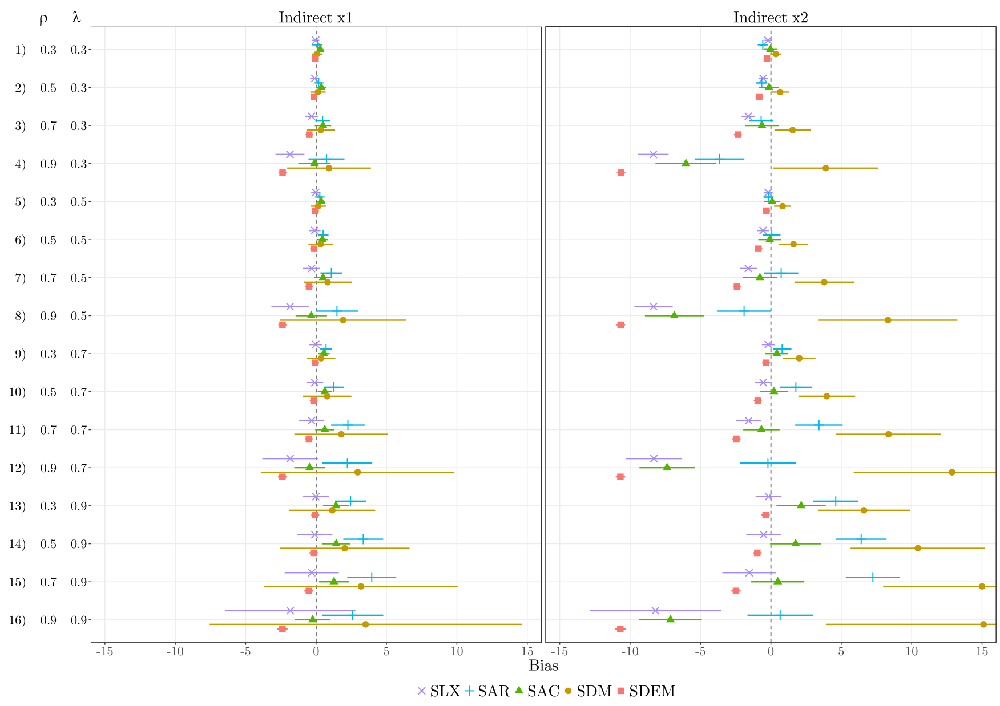
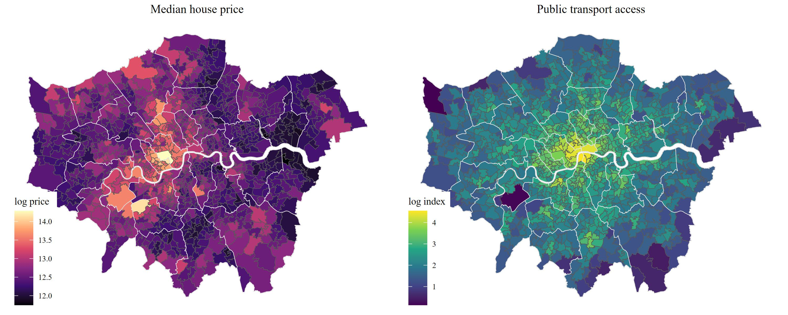
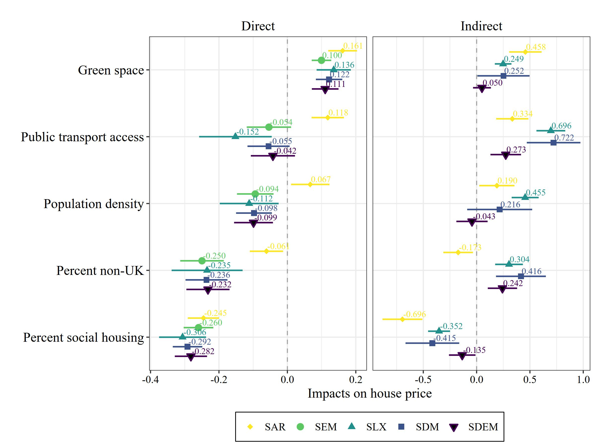

12 Comparing and Selecting Models
\[ \newcommand{\tr}{\mathrm{tr}} \newcommand{\rank}{\mathrm{rank}} \newcommand{\plim}{\operatornamewithlimits{plim}} \newcommand{\diag}{\mathrm{diag}} \newcommand{\bm}[1]{\boldsymbol{\mathbf{#1}}} \newcommand{\Var}{\mathrm{Var}} \newcommand{\Exp}{\mathrm{E}} \newcommand{\Cov}{\mathrm{Cov}} \newcommand\given[1][]{\:#1\vert\:} \newcommand{\irow}[1]{% \begin{pmatrix}#1\end{pmatrix} } \]
Required packages
Session info
R version 4.5.1 (2025-06-13 ucrt)
Platform: x86_64-w64-mingw32/x64
Running under: Windows 11 x64 (build 22631)
Matrix products: default
LAPACK version 3.12.1
locale:
[1] LC_COLLATE=English_United Kingdom.utf8
[2] LC_CTYPE=English_United Kingdom.utf8
[3] LC_MONETARY=English_United Kingdom.utf8
[4] LC_NUMERIC=C
[5] LC_TIME=English_United Kingdom.utf8
time zone: Europe/Berlin
tzcode source: internal
attached base packages:
[1] stats graphics grDevices utils datasets methods
[7] base
other attached packages:
[1] viridisLite_0.4.2 tmap_4.1 spatialreg_1.3-6
[4] Matrix_1.7-3 spdep_1.3-13 spData_2.3.4
[7] mapview_2.11.2 sf_1.0-21
loaded via a namespace (and not attached):
[1] xfun_0.52 raster_3.6-32
[3] htmlwidgets_1.6.4 lattice_0.22-7
[5] leaflet.providers_2.0.0 tools_4.5.1
[7] crosstalk_1.2.1 LearnBayes_2.15.1
[9] parallel_4.5.1 stats4_4.5.1
[11] sandwich_3.1-1 proxy_0.4-27
[13] KernSmooth_2.23-26 data.table_1.17.6
[15] satellite_1.0.5 RColorBrewer_1.1-3
[17] leaflet_2.2.2 lifecycle_1.0.4
[19] compiler_4.5.1 farver_2.1.2
[21] deldir_2.0-4 microbenchmark_1.5.0
[23] terra_1.8-54 leafsync_0.1.0
[25] codetools_0.2-20 leaflegend_1.2.1
[27] stars_0.6-8 htmltools_0.5.8.1
[29] class_7.3-23 yaml_2.3.10
[31] MASS_7.3-65 classInt_0.4-11
[33] lwgeom_0.2-14 wk_0.9.4
[35] boot_1.3-31 abind_1.4-8
[37] multcomp_1.4-28 nlme_3.1-168
[39] digest_0.6.37 mvtnorm_1.3-3
[41] splines_4.5.1 fastmap_1.2.0
[43] grid_4.5.1 colorspace_2.1-1
[45] cli_3.6.5 logger_0.4.0
[47] magrittr_2.0.3 maptiles_0.10.0
[49] base64enc_0.1-3 XML_3.99-0.18
[51] dichromat_2.0-0.1 cols4all_0.8
[53] survival_3.8-3 leafem_0.2.4
[55] TH.data_1.1-3 e1071_1.7-16
[57] scales_1.4.0 sp_2.2-0
[59] rmarkdown_2.29 zoo_1.8-14
[61] png_0.1-8 coda_0.19-4.1
[63] evaluate_1.0.4 knitr_1.50
[65] tmaptools_3.2 s2_1.1.9
[67] rlang_1.1.6 Rcpp_1.0.14
[69] glue_1.8.0 DBI_1.2.3
[71] rstudioapi_0.17.1 jsonlite_2.0.0
[73] R6_2.6.1 spacesXYZ_1.6-0
[75] units_0.8-7 Reload data from pervious session
load("_data/msoa2_spatial.RData")As we have seen, a variety of spatial model specifications exist that can be used to account for the spatial structure of the data. Thus, selecting the correct model specification remains a crucial task in applied research. For some helpful literature on the issue of model selection see Anselin, Serenini, and Amaral (2024), Halleck Vega and Elhorst (2015), Rüttenauer (2022)
One way of selecting the model specification is the application of empirical specification tests. In general, there are two different strategies: a specific-to-general or a general-to-specific approach (Florax, Folmer, and Rey 2003; Mur and Angulo 2009).
12.1 Specific-to-general
The specific-to-general approach is more common in spatial econometrics. This approach starts with the most basic non-spatial model and tests for possible misspecification due to omitted autocorrelation in the error term or the dependent variable.
Anselin et al. (1996) proposed to use Lagrange multiplier (LM) tests for the hypotheses \(H_0\): \(\lambda=0\) and \(H_0\): \(\rho=0\), which are robust against the alternative source of spatial dependence.
12.1.1 Lagrange Multiplier Test
We have earlier talked about methods to detect auto-correlation – visualisation and Moran’s I. Both methods can tell us that there is spatial autocorrelation. However, both method do not provide any information on why there is autocorrelation. Possible reasons:
- Interdependence (\(\rho\))
- Clustering on unobservables (\(\lambda\))
- Spillovers in covariates (\(\bm \theta\))
Lagrange Multiplier test (Anselin et al. 1996):
(Robust) test for spatial lag dependence \(LM_\rho^*\)
(Robust) test for spatial error dependence \(LM_\lambda^*\)
Robust test for lag dependence: \(H_0\): \(\rho=0\) \[ LM_\rho^* = G^{-1} \hat{\sigma}_\epsilon^2 \big(\frac{ \hat{\bm\epsilon}^\intercal \bm{Wy}}{\hat{\sigma}_\epsilon^2} - \frac{\hat{\bm \epsilon}^\intercal \bm{W\hat{\epsilon}}}{\hat{\sigma}_\epsilon^2} \big)^2 \sim \chi^2 \]
Robust test for error dependence: \(H_0\): \(\lambda=0\)
\[ LM_\lambda^* = \frac{ \big( \hat{\bm\epsilon}^\intercal \bm{W\hat{\epsilon}} / \hat{\sigma}_\epsilon^2 - [T\hat{\sigma}_\epsilon^2(G + T\hat{\sigma}_\epsilon^2)^{-1}] \hat{\bm\epsilon}^\intercal \bm{Wy} / \hat{\sigma}_\epsilon^2 \big)^2 }{ T[1 - \frac{\hat{\sigma}_\epsilon^2}{G + \hat{\sigma}_\epsilon^2}] } \sim \chi^2 \] with \[ \begin{split} G &= (\bm{WX\hat{\beta}})^\intercal (\bm I - \bm X (\bm X^\intercal\bm X)^{-1} \bm X^\intercal) (\bm{WX\hat{\beta}}) \\ T &= \tr[(\bm W^\intercal + \bm W)\bm W], \end{split} \] where \(\tr(\bm A)\) is the sum of the main diagonal of any square matrix \(\bm A\).
To perform the test, we first need to run a conventional OLS model. We take yesterdays example.
### Load data
load("_data/msoa2_spatial.RData")
### Generate weights
coords <- st_centroid(msoa.spdf)
# Neighbours within 3km distance
dist_15.nb <- dnearneigh(coords, d1 = 0, d2 = 2500)
summary(dist_15.nb)
# There are some empty neighbour sets. Lets impute those with the nearest neighbour.
k2.nb <- knearneigh(coords, k = 1)
# Replace zero
nolink_ids <- which(card(dist_15.nb) == 0)
dist_15.nb[card(dist_15.nb) == 0] <- k2.nb$nn[nolink_ids, ]
summary(dist_15.nb)
# listw object with row-normalization
dist_15.lw <- nb2listw(dist_15.nb, style = "W")mod_1.lm <- lm(log(no2) ~ per_mixed + per_asian + per_black + per_other
+ per_nonUK_EU + per_nonEU + log(POPDEN),
data = msoa.spdf)
summary(mod_1.lm)
Call:
lm(formula = log(no2) ~ per_mixed + per_asian + per_black + per_other +
per_nonUK_EU + per_nonEU + log(POPDEN), data = msoa.spdf)
Residuals:
Min 1Q Median 3Q Max
-0.46035 -0.09063 -0.01010 0.07484 0.90401
Coefficients:
Estimate Std. Error t value Pr(>|t|)
(Intercept) 2.5188244 0.0313089 80.451 < 2e-16 ***
per_mixed 0.0050636 0.0044498 1.138 0.2554
per_asian 0.0006251 0.0003459 1.807 0.0711 .
per_black -0.0009929 0.0007100 -1.398 0.1623
per_other 0.0141322 0.0022477 6.288 4.86e-10 ***
per_nonUK_EU 0.0132176 0.0011520 11.473 < 2e-16 ***
per_nonEU 0.0026836 0.0010643 2.522 0.0118 *
log(POPDEN) 0.1391236 0.0079044 17.601 < 2e-16 ***
---
Signif. codes: 0 '***' 0.001 '**' 0.01 '*' 0.05 '.' 0.1 ' ' 1
Residual standard error: 0.1373 on 975 degrees of freedom
Multiple R-squared: 0.6162, Adjusted R-squared: 0.6134
F-statistic: 223.6 on 7 and 975 DF, p-value: < 2.2e-16Subsequently, we run the robust LM test for Lag dependence:
test.lag <- lm.RStests(mod_1.lm,
listw = dist_15.lw,
test = "adjRSlag")
summary(test.lag) Rao's score (a.k.a Lagrange multiplier) diagnostics for
spatial dependence
data:
model: lm(formula = log(no2) ~ per_mixed + per_asian +
per_black + per_other + per_nonUK_EU + per_nonEU +
log(POPDEN), data = msoa.spdf)
test weights: dist_15.lw
statistic parameter p.value
adjRSlag 365.69 1 < 2.2e-16 ***
---
Signif. codes: 0 '***' 0.001 '**' 0.01 '*' 0.05 '.' 0.1 ' ' 1For the robust LM test on spatial error dependence, we run:
test.err <- lm.RStests(mod_1.lm,
listw = dist_15.lw,
test = "adjRSerr")
summary(test.err) Rao's score (a.k.a Lagrange multiplier) diagnostics for
spatial dependence
data:
model: lm(formula = log(no2) ~ per_mixed + per_asian +
per_black + per_other + per_nonUK_EU + per_nonEU +
log(POPDEN), data = msoa.spdf)
test weights: dist_15.lw
statistic parameter p.value
adjRSerr 324.32 1 < 2.2e-16 ***
---
Signif. codes: 0 '***' 0.001 '**' 0.01 '*' 0.05 '.' 0.1 ' ' 1In fact, you can compare them all at once:
test.all <- lm.RStests(mod_1.lm,
listw = dist_15.lw,
test = "all")
summary(test.all) Rao's score (a.k.a Lagrange multiplier) diagnostics for
spatial dependence
data:
model: lm(formula = log(no2) ~ per_mixed + per_asian +
per_black + per_other + per_nonUK_EU + per_nonEU +
log(POPDEN), data = msoa.spdf)
test weights: dist_15.lw
statistic parameter p.value
RSerr 1850.70 1 < 2.2e-16 ***
RSlag 1892.06 1 < 2.2e-16 ***
adjRSerr 324.32 1 < 2.2e-16 ***
adjRSlag 365.69 1 < 2.2e-16 ***
SARMA 2216.38 2 < 2.2e-16 ***
---
Signif. codes: 0 '***' 0.001 '**' 0.01 '*' 0.05 '.' 0.1 ' ' 1In both cases, the LM test indicates the presence of significance lag dependence and significance error dependence.
DO NOT use the above results as a reason to say: “well, there is Lag dependence and there is Error dependence. So, I will use a SAC-like specification”. This would usually be a bad choice, as the LM tests assume the absence od any SLX terms.
12.1.2 Problem
The specific-to-general approach based on the robust LM test offers a good performance in distinguishing between SAR, SEM, and non-spatial OLS (Florax, Folmer, and Rey 2003).
Still, in their original paper, Anselin et al. (1996) already note the declining power of the robust LM\(_\lambda\) test for spatial error dependence with increasing autocorrelation in the dependent variable (indicating some uncertainty under a SAC-like DGP).
Mur and Angulo (2009) demonstrate strong drawbacks of the specific-to-general approach under non-optimal conditions like heteroscedasticity or endogeneity.
Moreover, the test disregard the presence of spatial dependence from local spillover effects (\(\theta\) is assumed to be zero), as resulting from an SLX-like process. Cook, Hays, and Franzese (2020), for instance, show theoretically that an SLX-like dependence structure leads to the rejection of both hypotheses \(H_0\): \(\lambda=0\) and \(H_0\): \(\rho=0\), though no autocorrelation is present (Elhorst and Halleck Vega 2017; Rüttenauer 2022).
In a recent preprint, Anselin, Serenini, and Amaral (2024) proposed a two-step test approach (“STGE-Pre”). First, we need to test the presence of any SLX (\(\bm W \bm X\)) term. If we can omit those terms, we proceed with the robust LM lag test and the robust LM error test.
12.2 General-to-specific approach
The general-to-specific approach depicts the opposite method of specification search. This approach starts with the most general model and stepwise imposes restrictions on the parameters of this general model.

In theory, we would
start with a GNS specification and
subsequently restrict the model to simplified specifications based on the significance of parameters in the GNS.
The problem with this strategy is that the GNS is only weakly identified and, thus, is of little help in selecting the correct restrictions (Burridge, Elhorst, and Zigova 2016).
The most intuitive alternative would be to start with one of the two-source models SDM, SDEM, or SAC. This, however, bears the risk of imposing the wrong restriction in the first place (Cook, Hays, and Franzese 2020). Furthermore, Cook, Hays, and Franzese (2020) show that more complicated restrictions are necessary to derive all single-source models from SDEM or SAC specifications. Anselin, Serenini, and Amaral (2024) argue that the Ge
12.3 General advice?
LeSage and Pace (2009), LeSage (2014), Elhorst (2014) argue that there are strong analytical reasons to restrict the model specifications to a subset, as the SDM subsumes the SLX and SAR model, and the SDEM subsumes SLX and SEM.
It is easily observed that SDM reduces to SLX if \(\rho=0\) and to SAR if \({\bm \theta}=0\), while the SDEM reduces to SLX if \(\lambda=0\) and to SEM if \({\bm \theta}=0\). Less intuitively, (Anselin 1988) has also shown that the SDM subsumes the SEM. Therefore, we can express the reduced form and rearrange terms:
\[ \begin{split} {\bm y}&= {\bm X}{\bm \beta} + ({\bm I_N}-\lambda {\bm W})^{-1}{\bm \varepsilon} \\ ({\bm I_N}-\lambda {\bm W}){\bm y}&= ({\bm I_N}-\lambda {\bm W}){\bm X}{\bm \beta} + {\bm \varepsilon} \\ ({\bm I_N}-\lambda {\bm W}){\bm y}&={\bm X}{\bm \beta} -\lambda{\bm W}{\bm X}{\bm \beta} + {\bm \varepsilon} \\ {\bm y}&=({\bm I_N}-\lambda {\bm W})^{-1}({\bm X}{\bm \beta} + {\bm W}{\bm X}{\bm \theta} + {\bm \varepsilon}). \end{split} \]
Thus, the SEM constitutes a special case of an SDM with the relative simple restriction \({\bm \theta}=-\lambda{\bm \beta}\), meaning direct and indirect effects are constrained to a common factor (Anselin 1988, 2003).
The fact that SDM subsumes SAR, SLX, and SEM leads to the conclusion that applied research should only consider SDM and SDEM as model specifications (LeSage 2014). Especially in the case of a likely omitted variable bias, (LeSage and Pace 2009, ~68) argue in favour of using the SDM.
Nonetheless, others propose to use the SLX specification as point of departure (Gibbons and Overman 2012; Halleck Vega and Elhorst 2015). First, scholars have argued that SAC and SDM models are only weakly identified in practice (Gibbons and Overman 2012; Pinkse and Slade 2010). Second, the global spillover specification in SAR, SAC, and SDM often seems to be theoretically implausible.
And finally:

12.4 Design and Theory
Some argue that the best way of choosing the appropriate model specification is to exclude one or more sources of spatial dependence – autocorrelation in the dependent variable, autocorrelation in the disturbances, or spatial spillover effects of the covariates – by design Gibbons, Overman, and Patacchini (2015).
Natural experiments are probably the best way of making one or more sources of spatial dependence unlikely, thereby restricting the model alternatives to a subset of all available models. However, the opportunities to use natural experiments are restricted in social sciences, making it a favourable but often impractical way of model selection.
Cook, Hays, and Franzese (2020) and Rüttenauer (2022) argue that theoretical considerations should guide the model selection.
Rule out some sources of spatial dependence by theory, and thus restrict the specifications to a subset ( Where does the spatial dependence come from? ),
Theoretical mechanisms may guide the choice of either global or local spillover effects.
12.5 Monte Carlo simulation
This section discusses results from Rüttenauer (2022). The aim: how do different spatial models perform under different scenarios?
The DGP of the Monte Carlo simulation follows a GNS, where \({\bm \upsilon}_k\) and \({\bm \varepsilon}\) are independent and randomly distributed \(\mathcal{N}(0,\sigma^{2}_\upsilon)\) and \(\mathcal{N}(0,\sigma^{2}_\varepsilon)\) with a mean of zero, and \({\bm x}_k\) is the \(k\)th column-vector of \({\bm X}\) for \(k=1,...,K\) covariates (\(K\) is fixed at \(2\) in the simulations). The parameter \(\rho\) represents the autocorrelation in the dependent variable, \(\lambda\) the autocorrelation in the disturbances, and \(\delta_k\) the autocorrelation in covariate \(k\).
\[ \begin{split} {\bm y}&=\rho{\bm W}{\bm y}+{\bm X}{\bm \beta}+{\bm W}{\bm X}{\bm \theta}+ {\bm u},\\ {\bm u}&=\lambda{\bm W}{\bm u}+{\bm X}{\bm\gamma}+{\bm \varepsilon},\\ {\bm x}_k&=\delta_k{\bm W}{\bm x}_k+{\bm \upsilon}_k. \end{split} \] The parameter-vector \({\bm \gamma}\) specifies the correlation between \({\bm x}\) and the disturbance vector \({\bm u}\), thereby defining the strength of an omitted variable bias. In reduced form, this DGP can be written as \[ \begin{split} {\bm y}=&({\bm I_N}-\rho {\bm W})^{-1}\big[({\bm I_N}-\delta_k {\bm W})^{-1}{\bm \upsilon_k}\beta_k \\ &+{\bm W}({\bm I_N}-\delta_k {\bm W})^{-1}{\bm \upsilon_k}\theta_k \\ &+({\bm I_N}-\lambda {\bm W})^{-1}(({\bm I_N}-\delta_k {\bm W})^{-1}{\bm \upsilon_k}\gamma_k+{\bm \varepsilon})\big]. \end{split} \]
The parameter vector \({\bm \beta}\) was fixed at \({\bm \beta}=\irow{0.2&0.5}^\intercal\), and the noise parameters were fixed at \(\sigma^{2}_\upsilon\), \(\sigma^{2}_\varepsilon=1\) for all trials. All other parameters vary between the following two options for each parameter (vector):
- \(\rho \in \left\{ 0, 0.5\right\}\),
- \(\lambda \in \{0, 0.5\}\),
- \({\bm \delta} \in \left\{ \irow{0&0}^\intercal, \irow{0.4&0.7}^\intercal\right\}\),
- \({\bm \theta} \in \left\{\irow{0&0}^\intercal, \irow{0.1&0.8}^\intercal\right\}\),
- \({\bm \gamma} \in \left\{\irow{0&0}^\intercal, \irow{0.3&0}^\intercal\right\}\),
leading to a total of 32 distinct combinations. Note that this selection of parameters intentionally violates the common ratio assumption between direct and indirect effects, as this should be a more common case in practical research. All combinations were simulated in 1000 trials, with the same starting seed for each combination. If youre, interested in the simulations, see replication code on Github.
12.5.1 Without omitted variable bias

SLX, SDM, and SDEM all provide quite accurate estimates of the direct impacts (most visible in column 2). SAR, SEM, and SAC, in contrast, yield some drawbacks: especially in the presence of local spillover effects, these three specifications are biased (see lower part). Furthermore, SAR and SEM suffer from bias if autocorrelation in the disturbance and autocorrelation in the dependent variable are present simultaneously (see line 6 and 8). Though SLX is downwardly biased in case of autocorrelation in the dependent variable and the covariates (e.g. line 12 and 16), and SDM as well as SDEM yield some bias in case of a GNS-like process (line 14 and 16), those biases are rather moderate. This indicates that SLX, SDM, and SDEM are most robust against misspecification regarding the direct impacts.
Several differences exist regarding the indirect impacts. Most obviously, the often used SAR specification suffers from considerable bias: it overestimates indirect impacts in case of autocorrelation in the disturbances, and offers biased estimates if local spillover effects exist (which are not restricted to a common ratio). The latter also applies to SAC: though SAC offers relatively accurate estimates for \({\bm x}_2\), it overestimates indirect impacts for \({\bm x}_1\).
Regarding the remaining three specifications – SLX, SDM, and SDEM – conclusions are less obvious. SDM and SDEM suffer from large bias for high values of \({\bm \theta}\) (see \(\bm{x}_2\)) if the DGP follows a GNS-like process (line 14 and 16): SDM overestimates the indirect impacts, while SDEM underestimates the indirect impacts. In addition, SDM performs badly if the true DGP is SDEM (line 13), and SDEM performs badly if the true DGP is SDM (line 10), whereas the bias increases with higher values of \(\theta_k\) in both cases. Similar to SDEM, SLX underestimates the indirect impacts in presence of global spillovers / autocorrelation in the dependent variable.
12.5.2 With omitted variable bias

12.5.3 Indirect impacts if DGP = GNS
Below an illustration about the indirect impacts, if the spatial process is a combination of
Clustering on Unobservables
Interdependence (in the outcome)
Spillovers in Covariates

First, in a GNS-like situation, the bias in SDM grows with increasing autocorrelation in \({\bm y}\) (\(\rho\)) and increasing autocorrelation in the disturbances (\(\lambda\)).
Second, the bias in SLX and SDEM increases with higher values of \(\rho\), but is unaffected from the strength of \(\lambda\).
Third, though SLX and SDEM suffer from the same problem, the bias from omitting global autocorrelation is less severe in SLX than in SDEM.
Thus, the SLX outperforms SDEM. Furthermore, SLX outperforms SDM in most situations; only if the autocorrelation in the dependent variable is much stronger than the autocorrelation in the disturbances (\(\rho=0.9\), \(\lambda=0.3\)), SDM yields lower bias than SLX. Note that the SAC yields relatively low biases for the indirect impacts in GNS-like processes, but at the same time produces relative large biases in the direct impacts.
12.6 Example: House prices in London
The example is taken from Rüttenauer (2024).
As an example to compare the different spatial model specifications, we estimate the effect of local characteristics such as green space and public transport connectivity on the median house price. The relation between environmental characteristics and housing choice and prices has been investigated in several studies (Anselin and Lozano-Gracia 2008; Kley and Dovbishchuk 2021; Liebe, van Cranenburgh, and Chorus 2023). The data for the current example was retrieved from the London Datastore1, the 2011 Census2 and OpenStreetMaps and combined at the Middle Layer Super Output Areas (MSOA). There are 983 MSOAs in London with an average population size of around 8,000 residents. The script for compiling and preparing the data can be found in the Supplementary Materials. All data preparation and analysis were performed with the statistical software R. For a comprehensive overview of spatial software see Bivand, Millo, and Piras (2021) or Pebesma and Bivand (2023).
# Load the packages
pkgs <- c("sf", "mapview", "spdep", "spatialreg", "texreg",
"ggplot2", "ggthemes", "rmapshaper", "viridis", "gridExtra") # note: load spdep first, then spatialreg
lapply(pkgs, require, character.only = TRUE)
# Load the data
load("_data/msoa3_spatial.RData")
# Create Contiguity (Queens) neighbours weights
queens.nb <- poly2nb(msoa.spdf,
queen = TRUE,
snap = 1) # we consider points in 1m distance as 'touching'
queens.lw <- nb2listw(queens.nb,
style = "W")### Plot house prices
# Get some larger scale boundaries
borough.spdf <- st_read(dsn = paste0("_data", "/statistical-gis-boundaries-london/ESRI"),
layer = "London_Borough_Excluding_MHW" # Note: no file ending
)
# transform to only inner lines
borough_inner <- rmapshaper::ms_innerlines(borough.spdf)
borough_inner <- borough.spdf
# Plot with inner lines
msoa.spdf$med_house_price_ln <- log(msoa.spdf$med_house_price)
msoa.spdf$pt_access_index_ln <- log(msoa.spdf$pt_access_index)
gp <- ggplot(msoa.spdf)+
geom_sf(aes(fill = med_house_price_ln))+
scale_fill_viridis_c(option = "A")+
geom_sf(data = borough_inner, color = "gray92", fill = NA)+
coord_sf(datum = NA)+
theme_map()+
labs(fill = "log price")+
theme(plot.title = element_text(hjust = 0.5))+
ggtitle("Median house price")
gp2 <- ggplot(msoa.spdf)+
geom_sf(aes(fill = pt_access_index_ln))+
scale_fill_viridis_c(option = "D")+
geom_sf(data = borough_inner, color = "gray92", fill = NA)+
coord_sf(datum = NA)+
theme_map()+
labs(fill = "log index")+
theme(plot.title = element_text(hjust = 0.5))+
ggtitle("Public transport access")cairo_ps(file = paste("fig/", "Maps.eps", sep=""), width = 10, height = 4,
bg = "white", family = "Times New Roman")
par(mar = c(0, 0, 0, 0))
par(mfrow = c(1, 1), oma = c(0, 0, 0, 0))
grid.arrange(gp, gp2, ncol = 2)
dev.off()
jpeg(file = paste("fig/", "Maps.jpeg", sep=""), width = 10, height = 4,
units = "in", res = 300, type = "cairo",
bg = "white", family = "Times New Roman")
par(mar = c(0, 0, 0, 0))
par(mfrow = c(1, 1), oma = c(0, 0, 0, 0))
grid.arrange(gp, gp2, ncol = 2)
dev.off()
Figure Figure 12.1 shows an unclassified choropleth map of house prices and public transport access across London, both log-scaled for mapping. As we would expect, both indicators follow a relatively strong spatial of positive autocorrelation: house prices first decrease with increasing distance to the centre, and then seem to increase again in suburban areas. Moreover, there seems to be a pattern of higher prices towards the west and particularly high prices around Hyde Park. Public transport accessibility steadily decreases with distance to the city centre. Spatial regression models thus seem to be important here for two reasons: a) observations are not independent of each other but follow clear spatial patterns, and b) surrounding / adjacent urban characteristics likely play a role for housing demand and prices in the focal unit as well.
In Table 1, we regress the median house price in 2011 on the area (in km^2) covered by green space according to OpenStreetMaps, an index of public transport access (ranging from 0-low accessibility to 100-high accessibility), and several population characteristics from the 2011 census such as population density, the percent of non-UK residents and the percent of social housing. Reported are results form (1) non-spatial OLS, (2) Spatial Autoregressive (SAR), (3) Spatial Error Model (SEM), (4) Spatial Lag of X (SLX), (5) Spatial Durbin Model (SDM), (6) and Spatial Durbin Error Model (SDEM). All variables were standardized before estimation, and we thus interpret coefficients in standard deviations. Note that we do not estimate results for Spatial Autoregressive Combined (SAC) models because of its severe drawbacks for applied research (LeSage 2014).
# Specifcy variables and formula
fm <- med_house_price ~ park_kmsq + pt_access_index + POPDEN + per_nonUK + per_social
# Standardize variables
vars <- all.vars(fm)
msoa_sd.spdf <- msoa.spdf
for(v in vars){
msoa_sd.spdf[, v] <- as.numeric(scale(msoa_sd.spdf[, v, drop = TRUE]))
}# Estimate the models
mod_1.ols <- lm(fm, data = msoa_sd.spdf)
# Spatial autoregressive model
mod_1.sar <- lagsarlm(fm,
data = msoa_sd.spdf,
listw = queens.lw,
Durbin = FALSE) # we could here extend to SDM
# Spatial error model
mod_1.sem <- errorsarlm(fm,
data = msoa_sd.spdf,
listw = queens.lw,
Durbin = FALSE) # we could here extend to SDEM
# SLX
mod_1.slx <- lmSLX(fm,
data = msoa_sd.spdf,
listw = queens.lw,
Durbin = TRUE) # use a formula to lag only specific covariates
# Spatial Durbin
mod_1.sdm <- lagsarlm(fm,
data = msoa_sd.spdf,
listw = queens.lw,
Durbin = TRUE) # we could here extend to SDM
# Spatial Durbun Error
mod_1.sdem <- errorsarlm(fm,
data = msoa_sd.spdf,
listw = queens.lw,
Durbin = TRUE) # we could here extend to SDEM
### Coefficient Output
# Get AIC and N for all models to get common gof stats
aic.l <- sapply(list(mod_1.ols, mod_1.sar, mod_1.sem, mod_1.slx, mod_1.sdm, mod_1.sdem),
FUN = function(x) AIC(x))
n.l <- sapply(list(mod_1.ols, mod_1.sar, mod_1.sem, mod_1.slx, mod_1.sdm, mod_1.sdem),
FUN = function(x) length(residuals(x)))
# Create table
mod_1.slx.lm <- mod_1.slx
class(mod_1.slx.lm) <- "lm" # only for gofs
# screenreg(list(mod_1.ols, mod_1.sar, mod_1.sem, mod_1.slx.lm, mod_1.sdm, mod_1.sdem),
# custom.coef.map = list('(Intercept)' = '(Intercept)',
# 'park_kmsq' = 'Green space',
# 'pt_access_index' = 'Public transport access',
# 'POPDEN' = 'Population density',
# 'per_nonUK' = '% non-UK',
# 'per_social' = '% social housing',
# 'lag.park_kmsq' = 'W Green space',
# 'lag.pt_access_index' = 'W Public transport access',
# 'lag.POPDEN' = 'W Population density',
# 'lag.per_nonUK' = 'W % non-UK',
# 'lag.per_social' = 'W % social housing',
# 'rho' = 'rho',
# 'lambda' = 'lambda'),
# custom.model.names = c("OLS", "SAR", "SEM", "SLX", "SDM", "SDEM"),
# dcolumn = TRUE, caption.above = TRUE, digits = 3,
# caption = "Spatial regression models. Outcome variable: median house price.",
# include.nobs = FALSE,
# include.loglik = FALSE,
# include.aic = FALSE,
# include.lr = TRUE,
# include.wald = FALSE,
# include.fstatistic = FALSE,
# include.rmse = FALSE,
# custom.gof.rows = list('Num. obs.' = n.l,
# 'AIC' = aic.l),
# reorder.gof = c(1, 3:6, 2))wordreg(list(mod_1.ols, mod_1.sar, mod_1.sem, mod_1.slx.lm, mod_1.sdm, mod_1.sdem),
file = "fig/Regression.doc",
custom.coef.map = list('(Intercept)' = '(Intercept)',
'park_kmsq' = 'Green space',
'pt_access_index' = 'Public transport access',
'POPDEN' = 'Population density',
'per_nonUK' = 'Percent non-UK',
'per_social' = 'Percent social housing',
'lag.park_kmsq' = 'W Green space',
'lag.pt_access_index' = 'W Public transport access',
'lag.POPDEN' = 'W Population density',
'lag.per_nonUK' = 'W Percent non-UK',
'lag.per_social' = 'W Percent social housing',
'rho' = 'rho',
'lambda' = 'lambda'),
custom.model.names = c("OLS", "SAR", "SEM", "SLX", "SDM", "SDEM"),
dcolumn = TRUE, caption.above = TRUE, digits = 3,
caption = "Spatial regression models. Outcome variable: median house price.",
include.nobs = FALSE,
include.loglik = FALSE,
include.aic = FALSE,
include.lr = TRUE,
include.wald = FALSE,
include.fstatistic = FALSE,
include.rmse = FALSE,
custom.gof.rows = list('Num. obs.' = n.l,
'AIC' = aic.l),
reorder.gof = c(1, 3:6, 2))
texreg(list(mod_1.ols, mod_1.sar, mod_1.sem, mod_1.slx.lm, mod_1.sdm, mod_1.sdem),
file = "fig/Regression.tex",
custom.coef.map = list('(Intercept)' = '(Intercept)',
'park_kmsq' = 'Green space',
'pt_access_index' = 'Public transport access',
'POPDEN' = 'Population density',
'per_nonUK' = 'Percent non-UK',
'per_social' = 'Percent social housing',
'lag.park_kmsq' = 'W Green space',
'lag.pt_access_index' = 'W Public transport access',
'lag.POPDEN' = 'W Population density',
'lag.per_nonUK' = 'W Percent non-UK',
'lag.per_social' = 'W Percent social housing',
'rho' = 'rho',
'lambda' = 'lambda'),
custom.model.names = c("OLS", "SAR", "SEM", "SLX", "SDM", "SDEM"),
dcolumn = TRUE, caption.above = TRUE, digits = 3, use.packages = FALSE,
caption = "Spatial regression models. Outcome variable: median house price.",
include.nobs = FALSE, fontsize = "scriptsize",
include.loglik = FALSE,
include.aic = FALSE,
include.lr = TRUE,
include.wald = FALSE,
include.fstatistic = FALSE,
include.rmse = FALSE,
custom.gof.rows = list('Num. obs.' = n.l,
'AIC' = aic.l),
reorder.gof = c(1, 3:6, 2))?(caption)
|
|
OLS
|
SAR
|
SEM
|
SLX
|
SDM
|
SDEM
|
|---|---|---|---|---|---|---|
|
(Intercept)
|
0.000
|
-0.012
|
0.022
|
0.007
|
0.002
|
0.007
|
|
|
(0.027)
|
(0.017)
|
(0.139)
|
(0.024)
|
(0.015)
|
(0.103)
|
|
Green space
|
0.204***
|
0.133***
|
0.100***
|
0.136***
|
0.106***
|
0.111***
|
|
|
(0.029)
|
(0.018)
|
(0.015)
|
(0.026)
|
(0.016)
|
(0.020)
|
|
Public transport access
|
0.366***
|
0.097***
|
-0.054
|
-0.152**
|
-0.100**
|
-0.042
|
|
|
(0.033)
|
(0.021)
|
(0.033)
|
(0.054)
|
(0.034)
|
(0.033)
|
|
Population density
|
0.189***
|
0.055*
|
-0.094***
|
-0.112*
|
-0.111***
|
-0.099***
|
|
|
(0.037)
|
(0.023)
|
(0.027)
|
(0.044)
|
(0.028)
|
(0.029)
|
|
Percent non-UK
|
-0.033
|
-0.050*
|
-0.250***
|
-0.235***
|
-0.262***
|
-0.232***
|
|
|
(0.033)
|
(0.020)
|
(0.033)
|
(0.053)
|
(0.033)
|
(0.032)
|
|
Percent social housing
|
-0.402***
|
-0.202***
|
-0.260***
|
-0.306***
|
-0.266***
|
-0.282***
|
|
|
(0.032)
|
(0.020)
|
(0.022)
|
(0.035)
|
(0.022)
|
(0.024)
|
|
W Green space
|
|
|
|
0.249***
|
-0.029
|
0.050
|
|
|
|
|
|
(0.040)
|
(0.026)
|
(0.043)
|
|
W Public transport access
|
|
|
|
0.696***
|
0.239***
|
0.273***
|
|
|
|
|
|
(0.069)
|
(0.045)
|
(0.073)
|
|
W Population density
|
|
|
|
0.455***
|
0.136***
|
-0.043
|
|
|
|
|
|
(0.065)
|
(0.041)
|
(0.075)
|
|
W Percent non-UK
|
|
|
|
0.304***
|
0.300***
|
0.242***
|
|
|
|
|
|
(0.066)
|
(0.042)
|
(0.070)
|
|
W Percent social housing
|
|
|
|
-0.352***
|
0.119***
|
-0.135*
|
|
|
|
|
|
(0.053)
|
(0.035)
|
(0.063)
|
|
rho
|
|
0.786***
|
|
|
0.792***
|
|
|
|
|
(0.020)
|
|
|
(0.022)
|
|
|
lambda
|
|
|
0.890***
|
|
|
0.852***
|
|
|
|
|
(0.015)
|
|
|
(0.019)
|
|
Num. obs.
|
983
|
983
|
983
|
983
|
983
|
983
|
|
R2
|
0.263
|
|
|
0.439
|
|
|
|
Adj. R2
|
0.259
|
|
|
0.433
|
|
|
|
LR test: statistic
|
|
789.480
|
934.291
|
|
732.684
|
695.097
|
|
LR test: p-value
|
|
0.000
|
0.000
|
|
0.000
|
0.000
|
|
AIC
|
2502.492
|
1715.012
|
1570.201
|
2244.135
|
1513.451
|
1551.038
|
|
***p < 0.001; **p < 0.01; *p < 0.05
|
||||||
Compared to results from conventional non-spatial models, Table 1 comes with several additions: First, variables starting with a “W” (or “lag”) indicate the spatially lagged variable or in the case of row-normalized weights matrices the average value of the respective variable across the local neighbours. Moreover, there are two auto-regressive parameters: “rho” for the estimated auto-correlation in the dependent variable and “lambda” for the estimated auto-correlation in the error term. In case of the SAR, a highly significant \(\hat\rho\) coefficient of 0.786 indicates strong positive spatial auto-correlation in the median house price: the house price in adjacent areas positively impacts the focal house prices. A \(\hat\lambda\) of 0.89 in the SEM however indicates that there is very strong spatial auto-correlation among the (remaining) error variance. The likelihood ratio test in the goodness-of-fit statistics are highly significant in both cases, rejecting the NULL of no spatial auto-autocorrelation.
Given the strong positive auto-correlation in the dependent variable in SAR and SDM, we cannot directly interpret the coefficients as marginal effects. Similar to auto-regressive temporal models, we need to account for the spatial multiplier effect. For SEM, SLX and SDEM, we could directly interpret the coefficients of Table 1. However, we plot the impacts of all five models in Figure Figure 12.2 for reasons of comparison. Note that SEM only has direct and no indirect impacts.
# Get direct and indirect impacts
mod.l <- list(mod_1.sar, mod_1.slx, mod_1.sdm, mod_1.sdem)
imp.l <- vector(mode = "list", length = length(mod.l))
for(i in 1:length(mod.l)){
imp.l[[i]] <- spatialreg::impacts(mod.l[[i]], listw = queens.lw, R = 600)
}
# Add SEM
# Extract summary measures
extract.imp <- function(x){
s <- summary(x, zstats = TRUE, short = TRUE)
names <- attr(x, "bnames")
l <- length(names)
effs <- c("Direct", "Indirect", "Total")
if(attr(x, "type") == "lag" | attr(x, "type") == "mixed"){
coefs = c(s$res$direct, s$res$indirect, s$res$total)
}else{
coefs = c(s$impacts$direct, s$impacts$indirect, s$impacts$total)
}
df <- data.frame(var = rep(names, 3),
eff = rep(effs, each = l),
coef = coefs,
se = c(s$semat[, 1], s$semat[, 2], s$semat[, 3]),
pval = c(s$pzmat[, 1], s$pzmat[, 2], s$pzmat[, 3])
)
}
mods <- c("SAR", "SLX", "SDM", "SDEM")
for(i in 1:length(imp.l)){
tmp <- extract.imp(imp.l[[i]])
tmp$mod <- mods[i]
if(i == 1){
imp.res <- tmp
}else{
imp.res <- rbind(imp.res, tmp)
}
}
# Add SEM
sem.coefs <- summary(mod_1.sem)$Coef[,-3]
colnames(sem.coefs) <- c("coef", "se", "pval")
sem.df <- data.frame(var = rownames(sem.coefs),
eff = "Direct",
sem.coefs,
mod = "SEM")
imp.res <- rbind(imp.res, sem.df[-1, ])### Plot the effects
# Coef Labels
imp.res$lab <- as.character(sprintf("%.3f", round(imp.res$coef, 3)))
# # Add stars
# imp.res$lab[imp.res$pval <= 0.1 & imp.res$pval > 0.05] <- paste0(imp.res$lab[imp.res$pval <= 0.1 & imp.res$pval > 0.05], expression("\u2020"))
# imp.res$lab[imp.res$pval <= 0.05 & imp.res$pval > 0.01] <- paste0(imp.res$lab[imp.res$pval <= 0.05 & imp.res$pval > 0.01], "*")
# imp.res$lab[imp.res$pval <= 0.01 & imp.res$pval > 0.001] <- paste0(imp.res$lab[imp.res$pval <= 0.01 & imp.res$pval > 0.001], "**")
# imp.res$lab[imp.res$pval <= 0.001] <- paste0(imp.res$lab[imp.res$pval <= 0.001], "***")
# # Get rid of leading zero
# imp.res$lab <- gsub("0\\.", " \\.", imp.res$lab)
# Confidence intervals
interval2 <- -qnorm((1-0.95)/2) # 95% multiplier
imp.res$lb <- imp.res$coef - imp.res$se * interval2
imp.res$ub <- imp.res$coef + imp.res$se * interval2
# Rename variables
names <- list('park_kmsq' = 'Green space',
'pt_access_index' = 'Public transport access',
'POPDEN' = 'Population density',
'per_nonUK' = 'Percent non-UK',
'per_social' = 'Percent social housing')
imp.res$var <- factor(imp.res$var, levels = rev(names(names)), labels = rev(names))
imp.res$mod <- factor(imp.res$mod, levels = rev(c("SAR", "SEM", "SLX", "SDM", "SDEM")))
# Plot
zp_all <- ggplot(imp.res[imp.res$eff != "Total", ], aes(colour = mod, shape = mod, fill = mod)) +
facet_grid(. ~ eff, scales = "free_x") +
geom_hline(yintercept = 0, colour = scales::alpha("black", 0.3), lty = 2) +
geom_pointrange(aes(x = var, y = coef, ymin = lb, ymax = ub),
lwd = 0.7, position = position_dodge(width = 1/1.4),
fill = "black") +
geom_text(aes(label = lab,
x = var,
y = coef),
size = 3.0, show.legend = FALSE,
vjust = -0.35, hjust = -0.035, position = position_dodge(width = 1/1.4)) +
coord_flip() + theme_bw() +
scale_x_discrete(expand = c(0.1,0.1) ) +
theme(legend.title = element_blank()) +
labs(y = "Impacts on house price", x = "") +
scale_shape_manual(values = rev(c(18, 19, 17, 15, 25))) +
scale_color_viridis_d() +
scale_fill_viridis_d() +
theme(text = element_text(size = 13),
legend.position = "bottom",
legend.background = element_blank(),
legend.box.background = element_rect(colour = "black"),
legend.key = element_blank(),
axis.text.y = element_text(colour="black", size = 13),
axis.title.x = element_text(colour="black"),
axis.text.x = element_text(colour="black"),
strip.background = element_blank(),
strip.text = element_text(size = 13, colour = "black"),
) +
ggtitle(element_blank()) +
guides(colour = guide_legend(override.aes = list(linetype = 0), reverse = T),
shape = guide_legend(reverse = T))cairo_ps(file = paste("fig/", "Coefplot.eps", sep=""), width = 8, height = 6,
bg = "white", family = "Times New Roman")
par(mar = c(0, 0, 0, 0))
par(mfrow = c(1, 1), oma = c(0, 0, 0, 0))
zp_all
dev.off()
jpeg(file = paste("fig/", "Coefplot.jpeg", sep=""), width = 8, height = 6,
units = "in", res = 300, type = "cairo",
bg = "white", family = "Times New Roman")
par(mar = c(0, 0, 0, 0))
par(mfrow = c(1, 1), oma = c(0, 0, 0, 0))
zp_all
dev.off()
We start with the results of the SAR model in Figure Figure 12.2. A one standard-deviation increase of green space in the focal unit is associated with a 0.161 standard deviation increase in house prices within the same spatial unit. However, there are also highly significant diffusion processes. This increase in green space in the focal unit will also increase house prices in neighbouring units and the neighbours of these neighbours. This indirect impact will add up to a 0.458 standard deviation increase in house prices across neighbouring units connected through the spatial weights system. Similarly, an increase in public transport accessibility is associated with a 0.118 standard-deviation higher median house price in the unit itself and an additional 0.458 deviation increase diffusing though the neighbouring regions. Note that direct and indirect effects are bound to a common ration, as SAR only estimates one single spatial parameter \(\hat\rho\). In our case, every indirect impact equals approximately 2.83 times the direct impact. This is a very restrictive conditions and a severe drawback of the SAR model.
The SLX - similar to SAR - estimates a positive impact of green space in the focal but also in adjacent neighbourhoods on house prices in the focal unit. A one standard deviation in the focal unit is associated with 0.136 standard-deviations higher house price in the focal unit. If green spaces in adjacent neighbourhoods increase on average by one standard deviation, this would increase house prices in the focal unit by 0.249 standard deviations. Note that the SLX tells a different story about the effect of public transport access than SAR: there is a negative direct and a very strong and positive indirect effect. A one standard deviation increase in public transport access in the focal unit is associated with -0.152 standard deviations lower house prices. In contrast, more public transport in the local surrounding (the average neighbours) is associated with 0.696 standard deviations higher prices. This is in line with the idea that public transport facilities are usually not particularly attractive: it is good to have them close but not too close. The same is true for population density: it is good to live in a broader area with high population density as indicated by the indirect impacts (probability indicating high centrality), but the local neighbourhood should have a low population density as indicated by the negative direct impact.
We could go further with the other models. However, interpretation in SDM follows the same logic as SAR, and interpretation in SDEM aligns to SLX. Interpretation in SEM is analogous to non-spatial OLS, as there are no indirect impacts. Moreover, it is important to keep in mind that the indirect impacts are summary measures which sum over all impacts from or onto neighbouring regions. The indirect public transport effect of 0.696 in SLX would occur if the average public transport access across neighbours would increase by one standard deviation. This only occurs if all neighbours would simultaneously increase public transport access by one standard deviation.
For house prices, see: https://data.london.gov.uk/dataset/average-house-prices. For London accessibility scores see: https://data.london.gov.uk/dataset/public-transport-accessibility-levels↩︎
For UK demographics, see: https://www.nomisweb.co.uk/sources/census_2011↩︎